Heart Aid
Quantifying emotions to help therapists analyze marital issues
Project Brief
Final Graduation Project for my BA Design in 2010 Colombia and as intern work for the Psychology Department of the University. I focused on couples therapy and creating mutual empathy.
Problem
Therapy time was spent in a person complaining about the other, leaving little time to actually work on the problems. Plus the tools to record progress of the therapy were all paper based forms and recordings.
User
The app is for young and tech-savvy married couples. They need a way to communicate their stories to the therapist. The web app is for the therapists. They need a clear visualization of the data.
Solution
A digital love diary that couples use to track negative/positive events. I used emoticons to help tell stories and quantify emotions. The app displays the info in an interactive dashboard for the therapist's analysis.
Timeline 3 and a half months as full time BA Design student and intern in Bogotá, Colombia 2010 Role UX/UI Product designer: Finding a design opportunity, UX researcher and UI designer Team Solo with assistance of behavioral psychologists
PROTOTYPE
PROTOTYPE'S USER FLOW
PROCESS


Finding the audience
After a few conversations with behavioral therapists I identified the people I needed to interview. They were young (25-35 years old) tech savvy couples with enough money to buy an iPhone and pay for counseling. They were in the first 2 years of the marriage, probably with a new born. (image couple #2)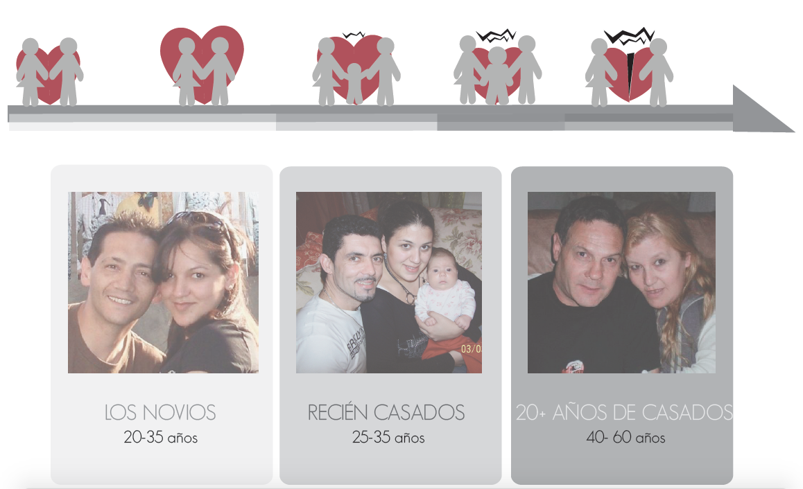
State of the art - Colombia 2010
Nike Plus + Paper based tools for tracking behavior in couple's therapy found in professional books: click them to see in a new tab
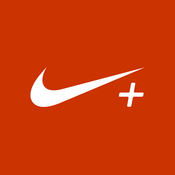 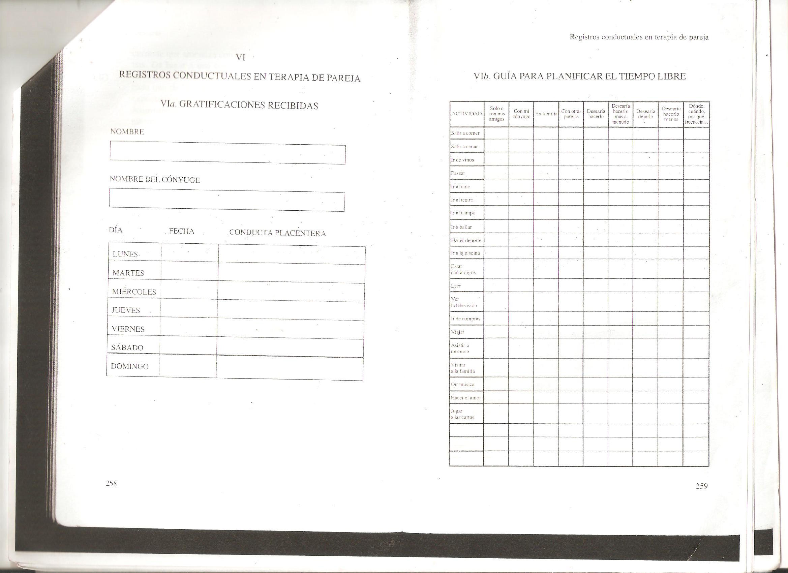
State of the art - today
Apps related to couple's counseling

Interview Findings
•Most of the therapy session is spent in complains of one partner about the other.
•The complains are stories of things that have happened during the week between sessions.
•People feel the need to describe their partners behavior and excuse their own. They need to tell the story from their point of view.
•The therapist needs to distill the areas of conflict, the negative/positive behaviors and the way each person is feeling. He/She needs to know how they communicate and resolve conflict.
Conclusion
There is time conflict between the need of the couple to complain and the goal of the therapist to focus their attention to the main problems. Thus, the product must:
•Reduce complaining time during the session by helping the users tell their stories before hand.
•Inform the therapist of: negative/positive events, behaviors, interactions and feelings.
•Keep track of the relationship and therapy progress.
PROTOYPE
How do these people tell stories?
I had to test how people told stories. I asked married couples to tell me all the ways they would recount their stories to a 3rd person. I discovered that people would simply call, leave a message or talk directly. At the time I could only dream of voice notes or translation of spoken words to written words, which would have been ideal for the couple.
No tech available for voice commands/voice to written features.
So I asked them to communicate their stories in a paper. After doing this several times I notice most people would draw symbols of the things they were recounting verbally. The people that didn't feel comfortable drawing just wrote keywords.
Using IDEO Cards : "Draw the experience"
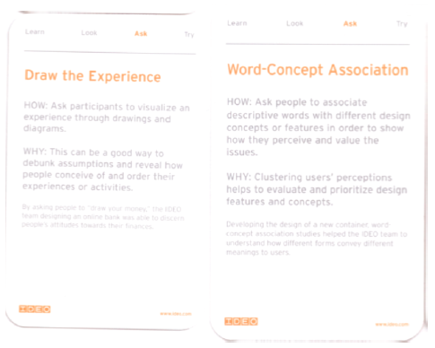
I met them again. This time I specifically asked them to draw/use keywords to tell their story. This helped me identify the structure of the stories: characters, feelings, behaviors and context/topic areas.
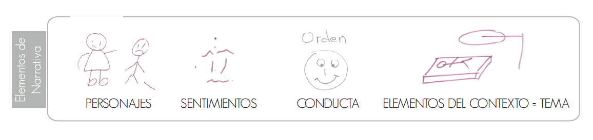
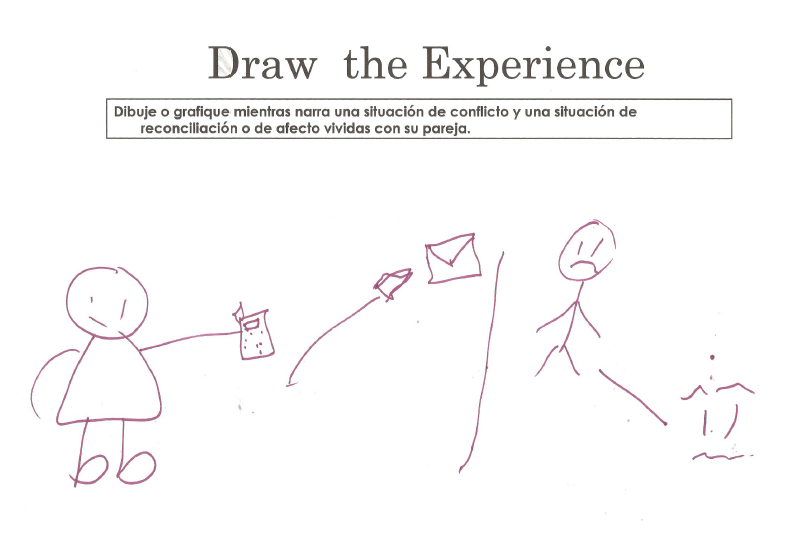
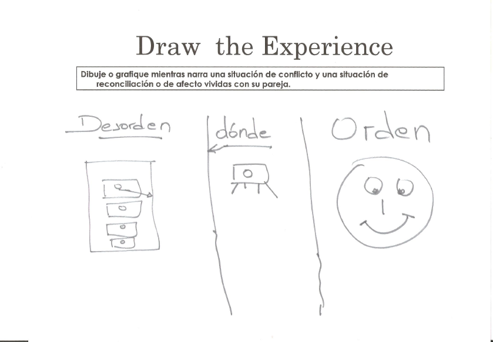
Conclusion and Product idea definition
I reached the conclusion that I needed to develop iconography to help people tell their stories.
The app interface should follow the narrative structure I found in the exercises + provide the information the therapist need.
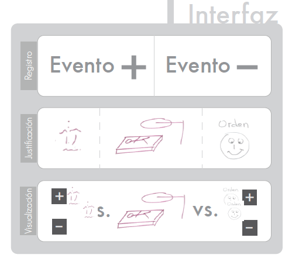
Next things to find out
I still needed to know:
1. Repertoire of emotions + behaviors + topic areas, and what icons people identify them with?
2. What's the best way for people to register a positive/negative event?
3. What's the best way to display results daily, weekly, monthly?
4. How will the therapist see this information?
Repertoire of emotions + behaviors + topic areas, and what icons people identify them with?
I organized another session. I had the objective of trying out the variables I had set: emotions, behaviors, and topic areas. I also wanted to try the icons and their meaning for people. Finally I wanted to know what other emotions, behaviors and topics people needed to tell their stories. I first consulted experts to have an initial repertoire.
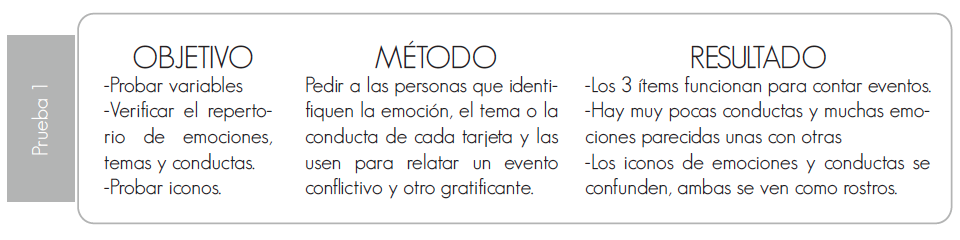
I gave them cards with icons drawn by me and I asked them to use the cards to tell me a story. I gave them postits and markers so they could adjust and make changes or add variables.
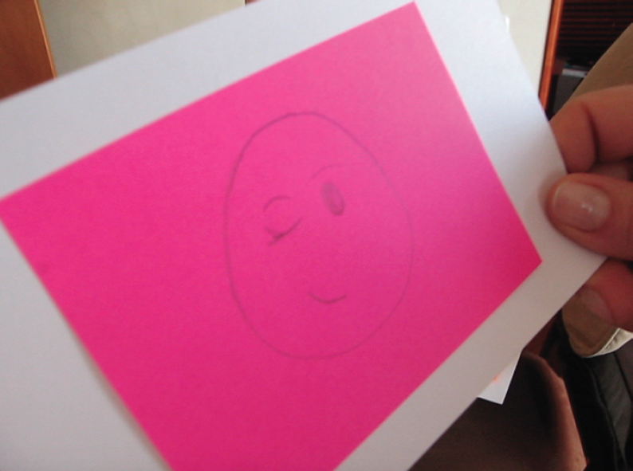
Results: the variables worked. People felt they could use it to tell their stories. What didn't work this time were the icons. People drew on them to make clear differences between one emotion or the other. I repeated this process and finally digitized my conclusions. I tested the digitized version as well.
The next image shows how much people understood each icon.
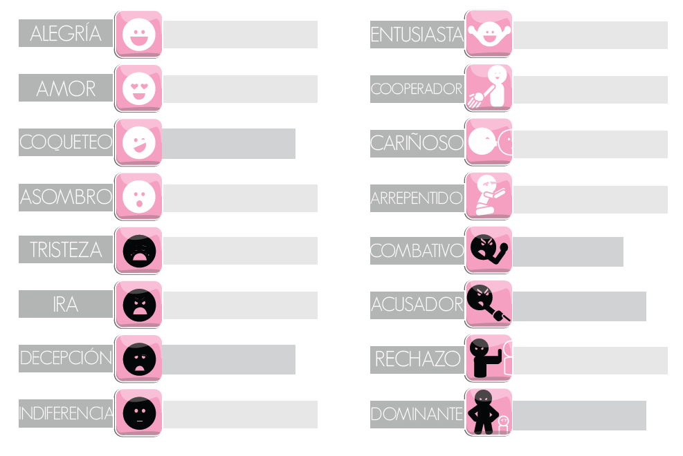
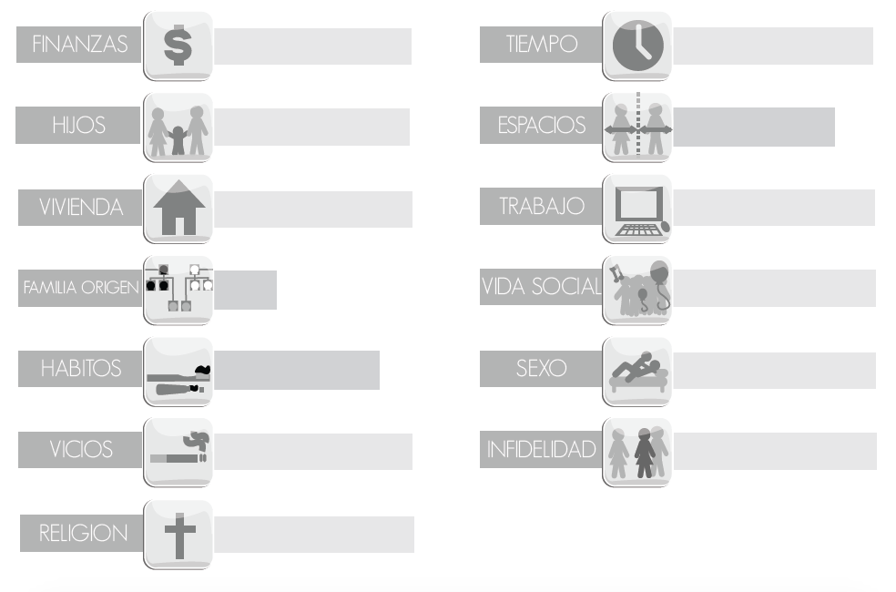
3. Mobile App Prototyping
Paper prototypes and first wireframes
I did a couple of paper prototypes with my ideas of the interface and tested them. I did the first wireframes and receive a lot of feedback to improve the interface and the user flow. 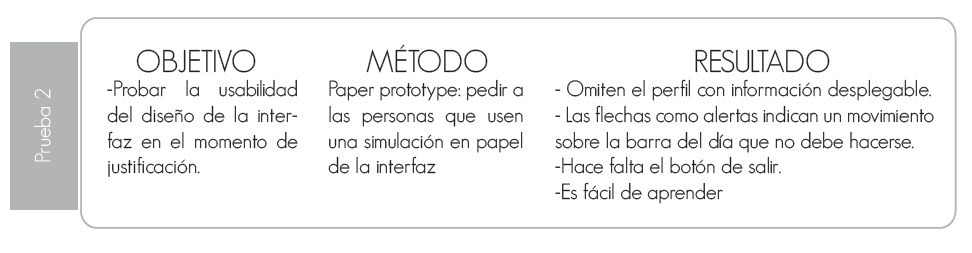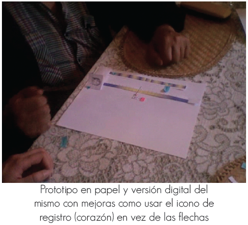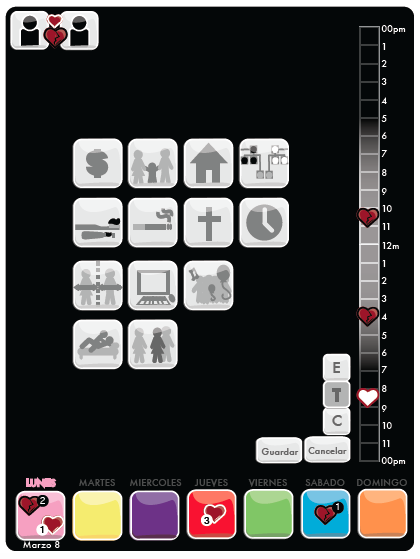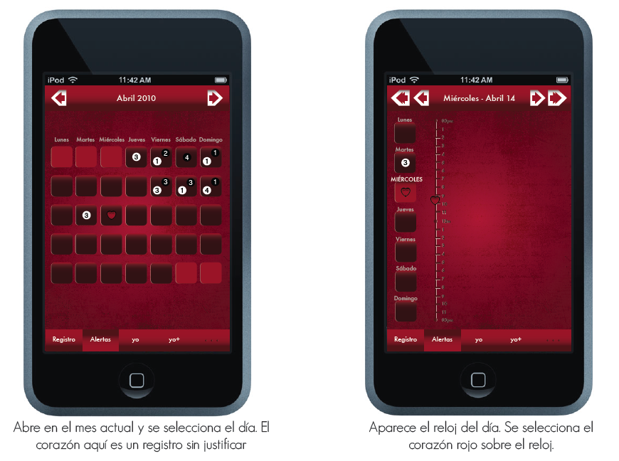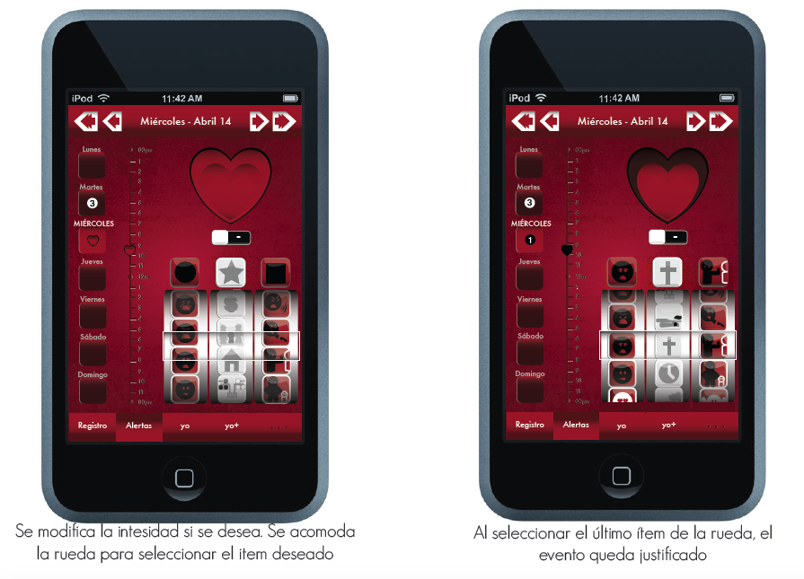
5. Presentation
Presentation to judges
I presented the video of usage and a flash made simulation. I received positive feedback and got the highest score for my project. I lost the flash animation.
Learnings and next steps
There a lot of things I would like to change about how I solved the interface. A simple prototyping tool like PoP app would have given me a lot of feedback I needed.